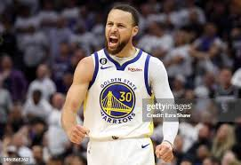

About my favorite player
Everything about our Contact

Stephen Curry
- "Wardell Stephen Curry born (March 14, 1988) is an American professional basketball player and
point guard for the Golden State Warriors of the National Basketball Association (NBA). Nicknamed "Chef Curry"
Early Life
- Curry was born on March 14, 1988, at the Akron General Medical Center in Akron, Ohio, to Sonya (née Adams) and Dell
Curry. He grew up in Charlotte, North Carolina, where his father spent most of his NBA career with the Charlotte
College career
- Before Curry even played in his first game for the Wildcats, head coach Bob McKillop praised him at a Davidson alumni
event, saying: "Wait 'til you see Steph Curry. He is something special."[20] In his second collegiate game, he recorded
a season-high 32 points and nine rebounds against Michigan.
Sophomore season
-
On March 21, 2008, Davidson matched up with seventh-seeded Gonzaga. Gonzaga led by 11 points early in the second half
but Curry went on to score 30 points in the half[26] to push Davidson to their first NCAA tournament win since 1969 with
a score of 82-76. Curry ended the game with 40 points while also going 8-of-10 from three-point range
Lebron James
- LeBron Raymone James Sr.(born December 30, 1984) is an American professional basketball player
for the Los Angeles Lakers of the National Basketball Association (NBA). Nicknamed "King James", he is the NBA's
all-time leading scorer and has won four NBA championships from 10 NBA Finals appearances, having made eight consecutive
appearances between 2011 and 2018.
Early Life
- LeBron Raymone James was born on December 30, 1984, in Akron, Ohio, to Gloria Marie James, who was only 16 at the time
of his birth His father, Anthony McClelland, has an extensive criminal record and was not involved in his
life. When James was growing up, life was often a struggle for the family, as they moved from apartment to
apartment in the seedier neighborhoods of Akron while Gloria struggled to find steady workLeBron Raymone James was born on December 30, 1984, in Akron, Ohio, to Gloria Marie James, who was only 16 at the time
of his birth His father, Anthony McClelland, has an extensive criminal record and was not involved in his
life. When James was growing up, life was often a struggle for the family, as they moved from apartment to
apartment in the seedier neighborhoods of Akron while Gloria struggled to find steady work
High school
-
As a 6-foot-2-inch (1.88 m) tall freshman, James averaged 18 points and 6.2 rebounds per game for the St. Vincent-St.
Mary varsity basketball team. The Fighting Irish went 27-0 en route to the Division III state title, making them the
only boys high school team in Ohio to finish the season undefeated.
Professional career
-
James was selected by his hometown team, the Cleveland Cavaliers, as the first overall pick of the 2003 NBA draft.
In his first regular season game, James scored 25 points in a 106-92 loss to the Sacramento Kings, setting an NBA record
for the most points scored by a prep-to-pro player in his debut performance.At the conclusion of the 2003-2004
season, James became the first Cavalier to receive the NBA Rookie of the Year Award.
Michael Jorden
-
Michael Jeffrey Jordan (born February 17, 1963), also known by his initials MJ,is an American businessman and former
professional basketball player, who is currently a minority owner of the Charlotte Hornets of the National Basketball
Association. He played 15 seasons in the National Basketball Association (NBA) between 1984 and 2003, winning six NBA
championships with the Chicago Bulls.
Early life
-
Michael Jeffrey Jordan was born at Cumberland Hospital in Brooklyn, New York City, on February 17, 1963, to bank
employee Deloris (née Peoples) and equipment supervisor James R. Jordan Sr. He has two older brothers, James Jr.
and Larry, as well as an older sister named Deloris and a younger sister named Roslyn.Jordan and his siblings
were raised Methodist.
College career
-
As a freshman under coach Dean Smith's team-oriented system, Jordan was named ACC Freshman of the Year after averaging
13.4 points per game on 53.4% shooting—ranking 10th in scoring and 5th in field goal percentage in the
conference. He made the game-winning jump shot in the 1982 NCAA Championship game against Georgetown, which was
led by future NBA rival Patrick Ewing.
National team career
-
Jordan made his debut as a college player for the U.S. national basketball team at the 1983 Pan American Games in Caracas, Venezuela. He led the team in scoring with 17.3 ppg as the US., coached by Jack Hartman, won the gold medal. The following year, Jordan won another gold medal in the 19 summer Olympics.